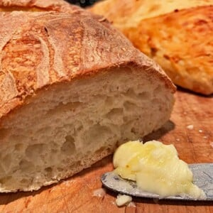

Crusty Bread

Description
This crusty bread recipe is simple and fast to make, anyone can make this homemade bread at home in three fast hours. It’s easy to see why this is our most popular of our many bread recipes.
Bread making was my kitchen weakness until this simple no-knead recipe came along. Read on, and I will show you step-by-step exactly how to do it with this easy method that uses just four ingredients.
Ingredients
- 3.25 cups water, lukewarm, about 100° F.
- 1.5 tablespoon dry active yeast
- 6.5 cups flour, bread flour if you have it.
- 1.5 tablespoon kosher salt, (May use less if desired.)
Steps
- Combine water and yeast and stir until the yeast is dissolved. Add flour and salt and mix until thoroughly combined.
- Allow the dough to rise for 2 hours at room temperature, covered with a kitchen towel.
- Apply a light dusting of flour over the dough and divide it in half and shape into 2 loaves, rounding the top. If you only want to make one loaf of bread at this time, store the unused dough in the refrigerator, covered, for up to 2 weeks until ready to use.
- Place the unbaked loaf(s) on pizza peel that is lightly dusted with cornmeal. Apply light dusting of flour over top and cut three slashes into top of dough, using a searrated knife. Cover dough with kitchen towel and allow to rest for 40 minutes.
- Preheat oven to 450° F with baking stone on the center rack. When bread is ready to go in the oven, slide the dough off pizza peel onto hot stone. Place 1 cup hot water into oven broiler (or other oven safe pan), on bottom wrack of oven. Quickly close oven door to created a steam bath within the oven. This will help produce a crisp outer crust.
- Bake for 30 minutes and allow to cool slightly before slicing. Enjoy!
Home